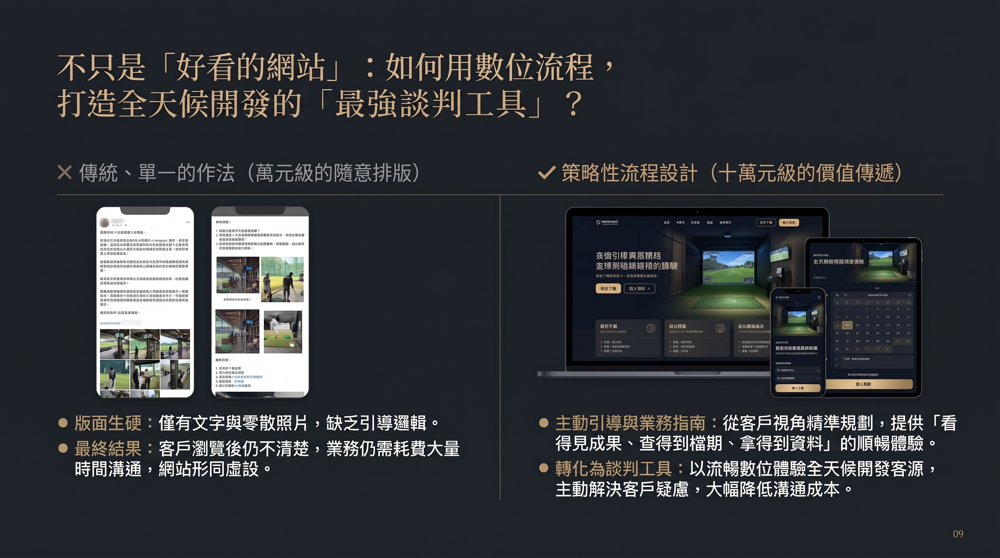
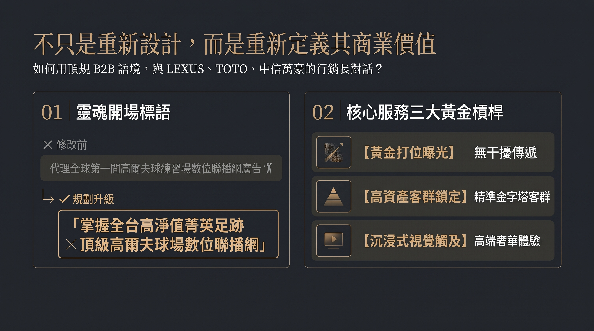
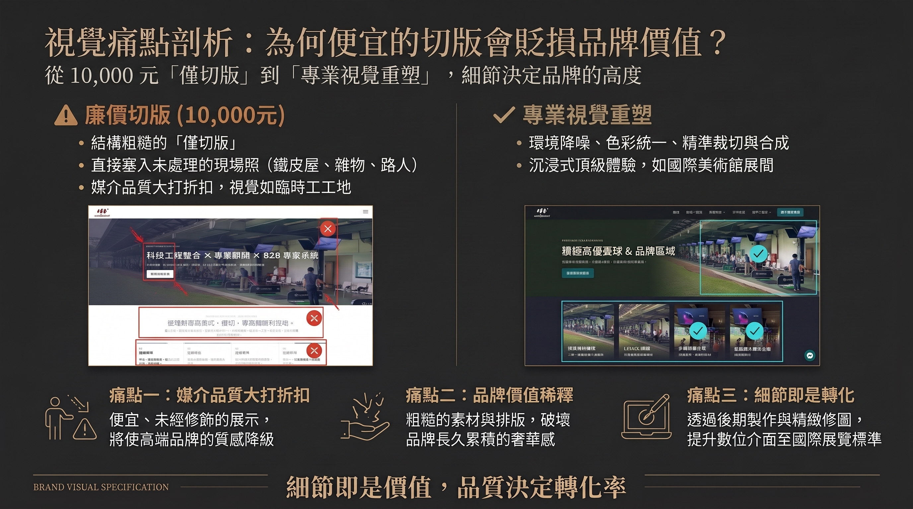
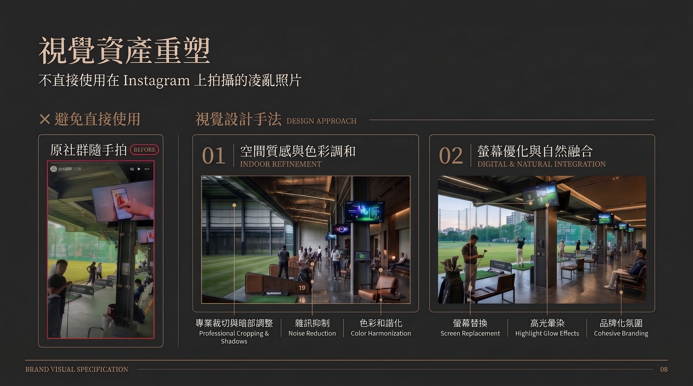
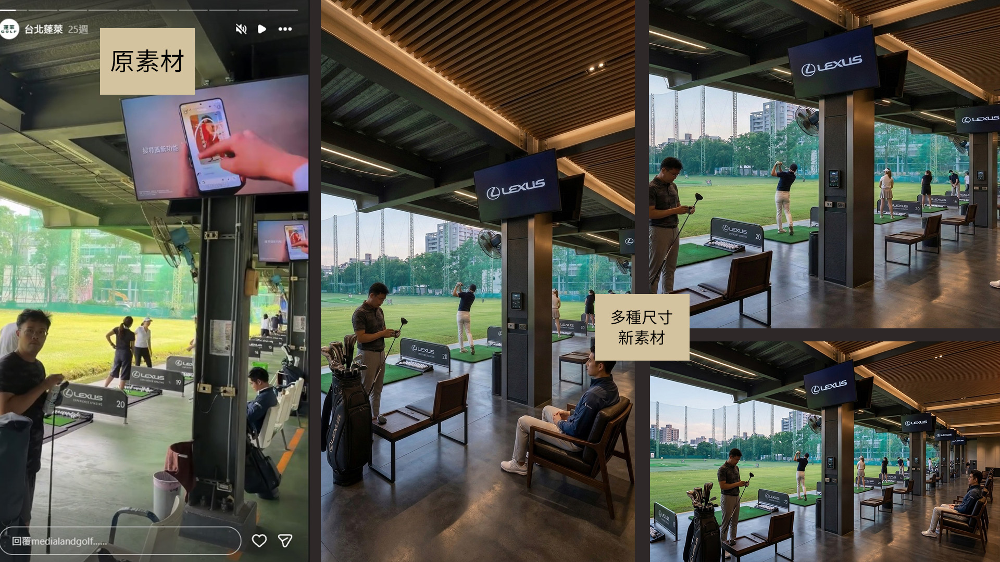
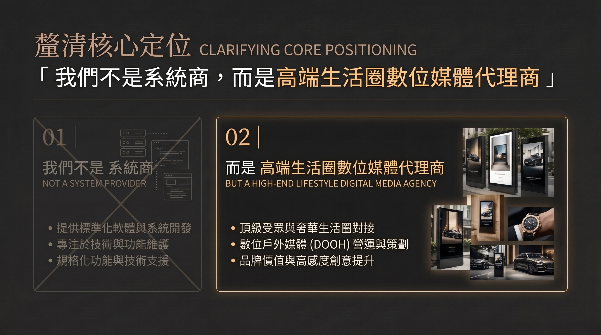
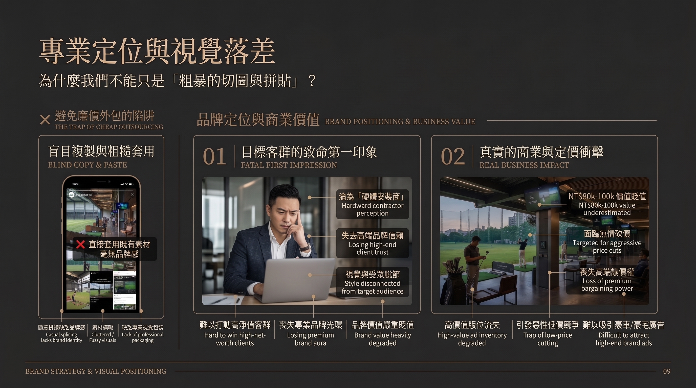
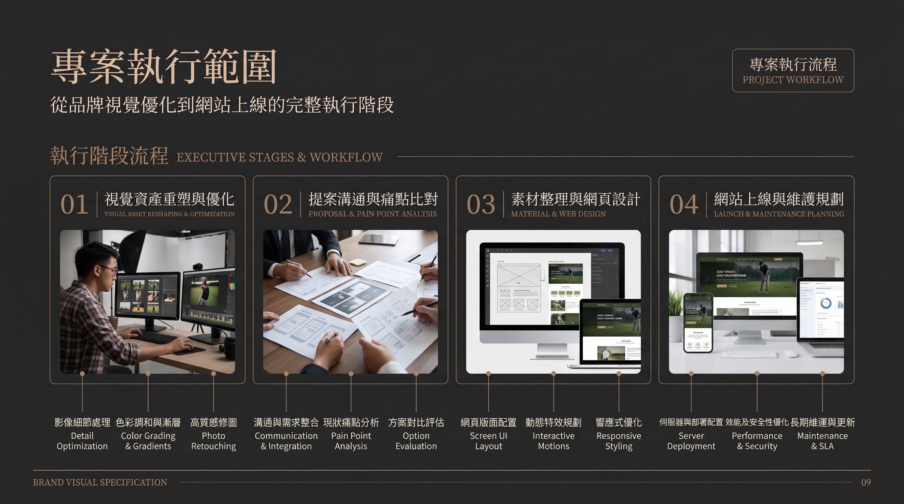
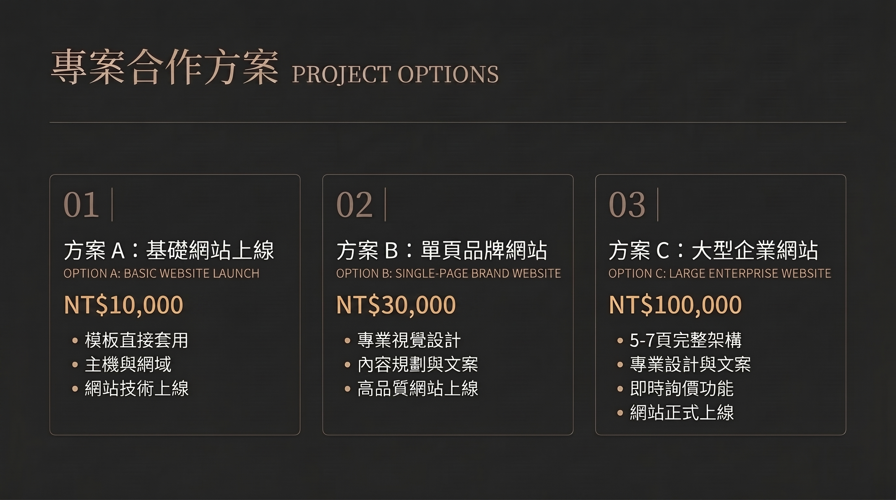

讓滿檔的商業氣勢
擁有一座匹配的頂級數位展示間
以專業企劃與視覺重塑，將全台高球場域流量轉化為 24 小時在線的 B2B 招商利器。
我們不是在做網頁，是在確立媒體代理商的身段
強悍的線下業務實績
檔期已滿至明年，證明我們掌握了台灣最精準、無可取代的高資產高球場域流量，並深獲各大頂級品牌的信賴。
亟需匹配的數位門面
當 LEXUS、TOTO、各大金控的行銷總監點進官網時，看到的必須是國際級的媒體質感，才能在談判桌上死守甚至拉高廣告定價。
專案隱形重本：從零開始的內容資產重構
目前手上僅有 IG 短影片與基礎資訊，要打造專業 B2B 官網，必須經歷繁複的內容煉金過程：
現場動態與短影音無法直接套用。必須經過專業降噪、色彩調校、局部合成與高光處理，將日常片段化為精品級媒體素材。
從零發想與撰寫符合廣告主邏輯的行銷文案（如 TA 受眾畫像、版位優勢、曝光效益），建立專業的溝通語調。
規劃能指引行銷高層快速了解檔期、覆蓋率與實績的訪客動線，省去大量線下一對一解釋的溝通成本。
用高階行銷語境，精準對話品牌高層
首屏靈魂 Slogan 重新定義
將抽象概念轉化為具備衝擊力的標語：「掌握全台高淨值菁英足跡 ✕ 頂級高爾夫球場數位聯播網」。
核心優勢結構化
提煉出「黃金打位專注曝光」、「高資產 TA 精準鎖定」、「無干擾沉浸式視覺」，讓廣告主秒懂價值。
打造 24 小時在線的最強業務談判工具
高端品牌實績牆
大品牌背書大品牌，瞬間拉滿潛在客戶的信任防線。
檔期動態展示區
凸顯檔期搶手與稀缺感，加速廣告主的下單決策。
Media Kit 下載
提供精簡版簡介下載，大幅降低內部團隊對外溝通成本。
為不同發展階段量身打造的建置方案
精實自主版
適合：已備妥完整框架企劃、文案與圖片資料，僅需前端切版與技術上線。
單頁旗艦版
適合：需要精煉視覺與流暢動線，快速建立專業品牌門面的單頁配置。
戰略旗艦版 (7頁)
適合：全方位企劃、視覺資產重塑、B2B 導購動線與大型媒體代理商架構。
為什麼 10 萬元的單次投資，其實極具性價比？
若以正規企業編制來看，要養一位具備商業企劃與前端開發能力的資深人才，單月薪資遠超過這個數字。
這筆 10 萬元的專案費用，是將數個月的專業研發與企劃成本進行高度壓縮的單次統包。相較於它能為明年跨國車商與精品續約時帶來的**媒體溢價與信任感**，只需多談成一檔廣告即可完整回本。
確保高品質與如期交付的專業規範
階段性修改額度
包含「提案規劃階段」與「實際製作階段」，各享有最高 3 次以內的來回微調與優化權益，確保方向精準。
重大變更防呆機制
網頁架構與版型經雙方確認並進入製作後，若因需求變更導致幅度過大或砍掉重練，將視為額外項目另行評估工時與計價。









讓專業，為滿檔的業績
構築最強的數位防線
我們準備好協助 medialandgolf 跨越質感門檻，迎接明年的全方位爆發。